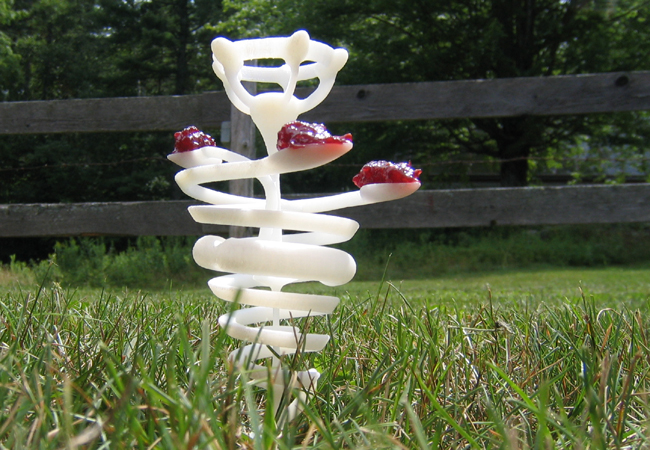

The Ants and the Plastic Plant
(2007)
A plastic structure rises out of the grass with globs of jelly on its plastic leaves. An ant scout finds the quarry and smears a pheromone trail on its return to the anthill, leading its many companions back to and up the plastic plant.
A second scout from another hill also finds the plastic tower. His kind have red middles and longer bodies and make their trail up the central stalk. The first kind, all-black and smaller, continue to spiral up the outside.
